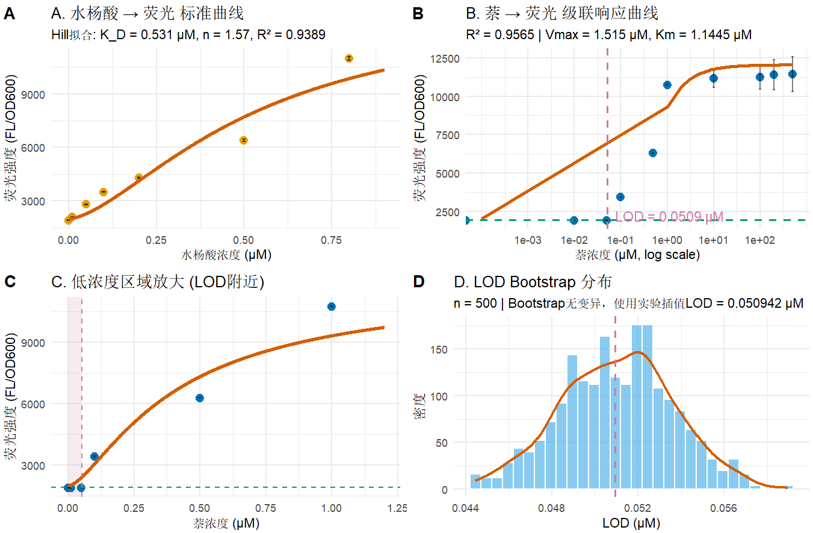

Naphthalene Biosensor Modeling
We constructed a cascade kinetic model coupling naphthalene biodegradation and salicylate‑dependent NahR‑Psal biosensor, predicting limit‑of‑detection for environmental naphthalene monitoring and offering theoretical guidance for wet‑lab optimization.

Background
Naphthalene is a typical low‑molecular‑weight polycyclic aromatic hydrocarbon (PAH). Inside engineered bacteria, naphthalene is degraded into salicylate by naphthalene dioxygenase. The generated salicylate further activates the NahR‑Psal biosensor to produce fluorescent output signal. The whole system forms a two‑step cascade: naphthalene input → enzymatic degradation → salicylate intermediate → NahR cooperative binding → fluorescence readout.
Due to Michaelis‑Menten enzymatic kinetics and Hill‑type cooperative transcription response, the relationship between naphthalene concentration and final fluorescence is highly non‑linear. Therefore, pure experimental characterization cannot directly obtain reliable theoretical limit‑of‑detection (LOD). Our dry‑lab model aims to quantitatively describe this cascade response, compute IUPAC‑standard LOD for naphthalene, evaluate estimation uncertainty, and provide theoretical guidance for biosensor performance optimization for environmental naphthalene monitoring.
Model Design & Assumptions
Mathematical framework
We built a composite cascade model combining Michaelis‑Menten equation (naphthalene‑to‑salicylate degradation module) and Hill equation (salicylate‑to‑fluorescence sensing module). The salicylate output from degradation module is substituted into Hill equation to directly map naphthalene concentration to fluorescence intensity.
1. Sensing module (Hill equation):
\[F=F_0+F_{\mathrm{max}}\cdot \frac{[\mathrm{Sal}]^n}{K_D^n+[\mathrm{Sal}]^n}\]
2. Degradation module (Michaelis‑Menten kinetics under fixed 3 h):
\[[\mathrm{Sal}]=\frac{V_{\mathrm{max}}\cdot [\mathrm{Naph}]}{K_m+[\mathrm{Naph}]}\]
3. Combined cascade model:
\[F=F_0+F_{\mathrm{max}}\cdot \frac{\left(\frac{V_{\mathrm{max}}\cdot [\mathrm{Naph}]}{K_m+[\mathrm{Naph}]}\right)^n}{K_D^n+\left(\frac{V_{\mathrm{max}}\cdot [\mathrm{Naph}]}{K_m+[\mathrm{Naph}]}\right)^n}\]
Algorithm selection
- Hill curve fitting: Levenberg‑Marquardt algorithm (nlsLM), nonlinear least‑squares for biochemical sigmoidal curve fitting.
-
LOD calculation: IUPAC 3σ criterion. Solve naphthalene concentration when fluorescence equals
\(F_{\mathrm{blank}}+3\sigma_{\mathrm{bg}}\)
. Two parallel approaches: experimental interpolation and reverse solving from cascade model. - Uncertainty evaluation: Bootstrap resampling (n = 500) to obtain LOD distribution, 95 % confidence interval and coefficient of variation.
Simplifying assumptions & rationale
- Reaction time fixed at 3 h: salicylate production reaches quasi‑steady‑state, Michaelis‑Menten can describe accumulated salicylate yield without full time‑course ODE.
- No intracellular salicylate degradation or consumption except NahR binding; salicylate loss is negligible under our experimental conditions.
- Hill parameters are constant: NahR‑salicylate sensing characteristics do not change after coupling with naphthalene degradation pathway; Hill parameters are pre‑fitted from salicylate standard curve and kept fixed.
- Background fluorescence \(F_{\mathrm{blank}}\) and background noise \(\sigma_{\mathrm{bg}}\) are constant and independent of naphthalene concentration.
Model Implementation & Parameters
Code implementation
All model fitting, LOD solving and Bootstrap uncertainty analysis were implemented in R language. We used minpack.lm::nlsLM for non‑linear least‑square regression. Custom functions realized threshold calculation, experimental interpolation and model reverse solving for LOD. Self‑written Bootstrap loop with 500 resampling cycles outputs parameter table, R², LOD values and reliability logs.
Parameter source & calibration
Sensing‑module Hill parameters were calibrated from independent salicylate fluorescence standard curve and kept fixed. Degradation‑module parameters \(V_{\mathrm{max}}\) and \(K_m\) were fitted against naphthalene titration fluorescence data. Background parameters were directly measured from blank control samples.
| Parameter | Symbol | Estimated value | Biological meaning |
|---|---|---|---|
| Basal fluorescence | \(F_0\) | 1892.32 | Background fluorescence without induction |
| Maximal fluorescence | \(F_{max}\) | 9104.67 | Saturated reporting fluorescence |
| Dissociation constant | \(K_D\) | 0.5311 μM | NahR affinity to salicylate |
| Hill coefficient | \(n\) | 1.571 | Positive cooperativity of NahR binding |
| Max salicylate yield | \(V_{max}\) | 1.515 μM | 3‑h maximum salicylate production |
| Michaelis constant | \(K_m\) | 1.1445 μM | Naphthalene dioxygenase affinity to naphthalene |
| Blank fluorescence | \(F_{blank}\) | 1893.0 | Blank control fluorescence |
| Background noise | \(\sigma_{bg}\) | 8.5 | Standard deviation of blank signal |
Model Result & Validation
Simulation & fitting results
Hill fitting of salicylate standard curve gives \(R^2=0.9389\). Hill coefficient n = 1.571 > 1 confirms positive cooperative interaction between NahR and salicylate. Global fitting of cascade model against naphthalene titration data yields \(R^2=0.9565\), showing high consistency between simulated curve and wet‑lab experimental points.

LOD calculation by IUPAC 3σ criterion:
• Experimental interpolation: \(LOD_{exp}=0.050942\ \mu M\ (\approx50.94\ nM)\)
• Model reverse solving: \(LOD_{model}=0.0509\ \mu M\)
Bootstrap uncertainty(n=500): 95%CI = [0.0498, 0.0521] μM, CV < 3 %. Two independent LOD approaches agree very well, and small CV demonstrates stable estimation.
Accuracy and limitation
Our model is validated by three pieces of evidence: close match between fitted curve and wet‑lab data; near‑identical LOD values from experimental interpolation and model reverse solving; low coefficient of variation from Bootstrap resampling.
- Parameters are calibrated under fixed 3 h incubation time; \(V_{max}\) and effective LOD will shift if reaction duration changes.
- The model ignores matrix effects in real‑world environmental water samples. Complex samples may alter enzyme activity or NahR performance, which is not incorporated.
- This is a steady‑state model and cannot capture dynamic time‑dependent evolution of intracellular salicylate concentration.
Model Application & Significance
1. Characterize biosensor performance: The model predicts naphthalene LOD ~50.94 nM, far below WHO drinking‑water naphthalene limit (~0.78 μM). Quantitatively proving our biosensor possesses practical potential for environmental naphthalene monitoring. Above 51 nM, fluorescence signal can be statistically distinguished from background noise.
2. Guide wet‑lab optimization: The cascade model connects enzyme parameters (\(K_m\), \(V_{max}\)) and sensor parameters (\(K_D\), Hill‑n)) to final LOD output. We can predict how tuning enzyme expression or NahR affinity reshapes detection performance, reducing blind wet‑lab trial‑and‑error.
3. Cross‑validate experimental results: Model‑predicted LOD matches experimental interpolation results. Bootstrap supplies quantitative uncertainty instead of only a single LOD number, improving reliability of our wet‑lab conclusion.
4. Project‑level contribution: This cascade mathematical model bridges naphthalene degradation pathway and genetic reporting module. It provides a reusable workflow for multi‑step whole‑cell biosensor modeling and supports our project’s core claim for PAHs environmental detection.